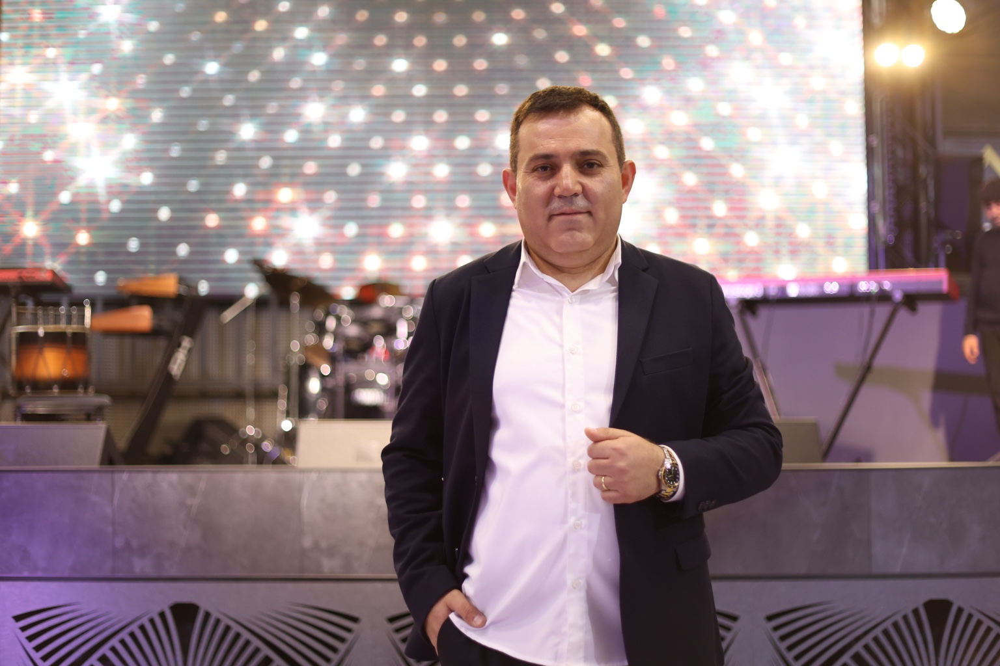

Release 01
Popurri
Official Audio
Պաշտոնական երաժշտական էջ
Հայկական երաժշտություն, հզոր կատարում և պաշտոնական հարթակ՝ տեսանյութերի, պատվերների, կապի և ապագա streaming հղումների համար։
Դիտեք “Պոպուրի” պաշտոնական կատարումը YouTube-ում։ Հետագայում այս բաժնում կարող ենք ավելացնել նոր տեսանյութեր։
Գևորգ Հարությունյանը հայկական երաժշտության կատարող է։ Այս պաշտոնական կայքը ստեղծված է տեսանյութերի, կապի, պատվերների և երաժշտական հղումների համար։
Պաշտոնական լուսանկարներ՝ բեմական և artist profile-ի համար։

Լսեք պաշտոնական երգերը, դիտեք YouTube-ում և ներբեռնեք MP3, WAV կամ MP4 տարբերակները։

Այստեղ հավաքված են պաշտոնական social և երաժշտական հղումները։
Հարսանիքների, ընտանեկան միջոցառումների, խնջույքների, համերգների և համագործակցության համար կապ հաստատեք։
Պաշտոնական կապ՝ պատվերների, տեսանյութերի, համագործակցության և երաժշտական հարցերի համար։
Gevorg Harutyunyan Popurri official music. Գևորգ Հարությունյան Պոպուրի պաշտոնական երաժշտություն. Геворг Арутюнян Попурри официальная музыка.